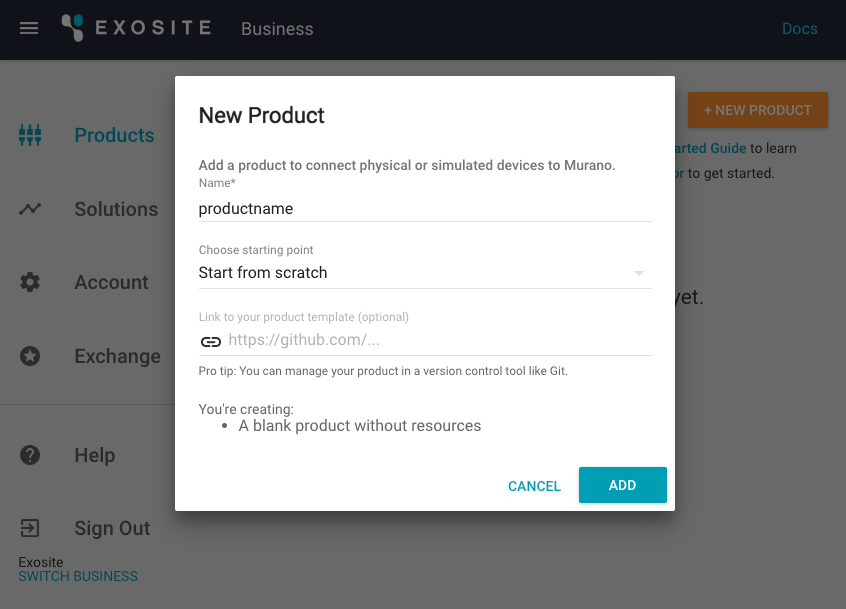
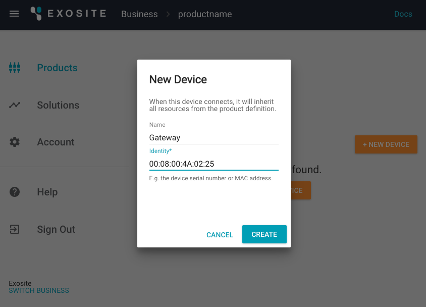
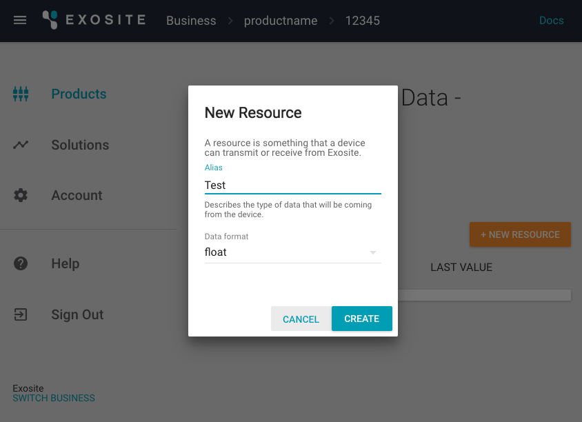
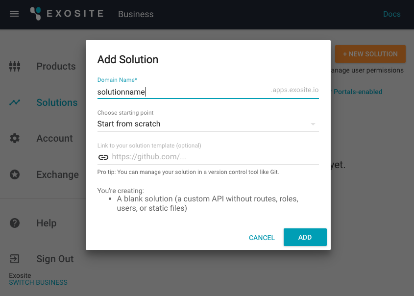

ExositeReady™ Gateway Engine Solution App
This guide provides an example solution displaying all the telemetric data from ExositeReady™ Gateway Engine (GWE) as well as showing a custom gateway application: "gmq-sine-demo." For additional information and resources, please refer to the GWE documentation home page.
Requirements
This guide requires the installation of GWE on your gateway hardware device. These installation instructions can be found in the GWE Getting-started Guide.
NOTE: This is a technical tutorial. You will need some familiarity with your operating system’s terminal.
Getting Started
Configure Murano
In your browser, navigate to the Products tab.
- Click "NEW PRODUCT."
- In the popup box, name your product whatever you like.
- Select Start from scratch from the Choose starting point drop-down menu.
Click "ADD."

Click to open your new product and navigate to the DEVICES tab.
- Click "NEW DEVICE."
- In the popup box, name your device "Gateway".
- Use your gateway's MAC address as the Identity. (Example format "00:08:00:4A:02:25".)
Click "CREATE."

Refer back to the previous step to add another new device called "Test Data", using "12345" as the Identity.

Click to open your Test Data device.
- Click "NEW RESOURCE."
- In the popup box, input the Alias as “Test” and Data format as float.
Click "CREATE."

Add additional new resources to your "Gateway" device with the Aliases "usage_report", "engine_report", "device_info", "update_interval", "engine_fetch", and "fetch_status". Use string as the Data format for each.

Navigate to the Solutions tab.
- Click "NEW SOLUTION."
- In the popup box, name the domain whatever you like.
- Select Start from scratch from the Choose starting point drop-down menu.
Click "ADD."

Open your terminal to install the Exosite CLI tool.
pip install exositeClone the GWE Seed App repository to your machine.
git clone https://github.com/exosite/GWE-Seed-AppInit the Exosite program and log in using your exosite.io credentials.
cd GWE-Seed-App exosite --initDeploy the solution.
exosite --deploy
Configure the Gateway
Ensure GWE has been properly installed on your gateway following the GWE Getting-started guide.
Set the update interval to post data every minute.
gwe -t 60Install the gmq-sine-demo onto the gateway using the documentation. Use the device identity as the Serial when prompted (12345).
Navigate to your solution page and check to see the data is flowing.
If you encounter any issues, please contact the dedicated GWE support team at gwesupport@exosite.com.